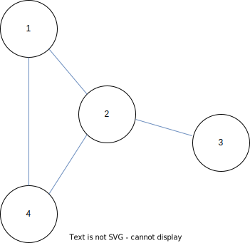

If you pay attention to everything around you, you will notice that graphs are everywhere. It is natural to represent many things as graphs. For example, a social network can be represented as a graph where the nodes are people and the edges are friendships. Molecules can be represented as graphs where the nodes are atoms and the edges are chemical bonds.
Tackle the problem of learning from graph structure with traditional methods requires a lot of domain knowledge. For example, to classify the nodes in a social network, we need to extract features from the nodes and edges. Then, we need to design a model that can learn from the extracted features. Consequently, the model and data preprocessing pipeline are very specific to the task.
Nowdays, with the rise of deep learning, we can learn from graph structure without requiring a lot of domain knowledge. That’s where Graph Neural Networks (GNNs) come in.
Graph Neural Network (GNN) is a neural network that can learn from graph structure. It provides a framework to learn from graph structure without requiring a lot of domain knowledge. Moreover, it can be applied to many tasks such as classifying nodes, predicting the connection between nodes, or predicting the graph structure.
To give you an idea of what GNN can do, here are some examples of applications:
-
Classifying nodes: predict the type of a person in a social network (student, professor, etc.) or predict the atom type in a molecule.
-
Predicting the connection between nodes: predict the friendship between two people in a social network.
-
Predicting the graph structure: predict the type of a molecule from its structure.
Examples of tasks that can be solved with GNNs
In this post, I will give you an overview of GNNs. Also, explaining in detail the different components of a GNN and how it works theoretically. This post will contain a lot of math. Please bear with me. Now, let’s get started!
What is a graph?
Graph is a data structure that consists of nodes and edges. The edges connect the nodes. Mathematically, a graph can be represented as a tuple $(V, E)$ where $V$ is the set of nodes and $E$ is the set of edges. A graph can be directed or undirected. For simplicity, let’s focus on undirected graphs.
 Example of a graph with 4 nodes and 4 edges
In the above figure, the nodes are represented as circles ($V \in {1, 2, 3, 4}$) and the edges are represented as blue lines ($E \in {(1, 2), (1, 4), (2, 3), (2, 4)}$).
Another way to represent a graph is with an adjacency matrix. An adjacency matrix is a matrix $A$ of size $|V| \times |V|$ where $A_{ij} = 1$ if there is an edge between node $i$ and node $j$ and $A_{ij} = 0$ otherwise. For example, the adjacency matrix of the above graph is:
$$ A = \begin{bmatrix} 0 & 1 & 0 & 1 \\ 1 & 0 & 1 & 1 \\ 0 & 1 & 0 & 0 \\ 1 & 1 & 0 & 0 \\ \end{bmatrix} $$These two representations that I mentioned above are the most common and easy ways to represent a graph. Imagine if you want to add more information to the graph such as node information or edge information, this makes the graph representation more complicated, and it will be hard to work with.
What is a Graph Neural Network?
Now that we know what a graph is, it’s time to talk about the way to work with graph structure. I will assume that you are familiar with neural networks. If you are not, I recommend you to read this post first.
A Graph Neural Network (GNN) is one type of neural network that can learn from graph structure to solve a task by aggregating information from the neighbors of each node. One of the well-known GNNs is the Message Passing Neural Network (MPNN) proposed by Gilmer et al. in this paper.
To make this post easier to follow, let’s focus on the task of classifying nodes.
Message Passing Neural Network
The Message Passing Neural Network (MPNN) consists of three steps: Initialization, Message Passing, and Transformation. The initialization step is used to initialize the hidden state of each node (also called node embedding). The message passing step is used to aggregate information from the neighbors of each node. The transformation step is used to transform the hidden state of each node to a new hidden state.
The following equation shows how to update the hidden state of each node at time $t+1$:
$$ \begin{align} x_i^{(t+1)} = \gamma^{(t)} \left( x_i^{(t)}, \sum_{j \in \mathcal{N}(i)} m^{(t)} \left( x_i^{(t)}, x_j^{(t)}, e_{ij}^{(t)} \right) \right) \end{align} $$Where $x_i^{(t)}$ is the hidden state of node $i$ at time $t$, $\mathcal{N}(i)$ is the set of neighbors of node $i$, $m^{(t)}$ is the message function which is used to aggregate information from the neighbors of each node, $e_{ij}^{(t)}$ is the edge information between node $i$ and node $j$ at time $t$, and $\gamma^{(t)}$ is the update function to update the hidden state of each node given the aggregated information from the neighbors of each node, usually it’s a neural network.
 Illustration of aggregating information from the neighbors of each node
Illustration of aggregating information from the neighbors of each node
The above figure shows the example when considering the node $x_i^{(t)}$ at time $t$, all the information from the neighbors of node $i$ (blue nodes on the left) is aggregated into a message $m^{(t)}$ such as the sum of the hidden states of the neighbors of node $i$ which can be written as:
$$ \begin{align} m^{(t)} \left( x_i^{(t)}, x_j^{(t)}, e_{ij}^{(t)} \right) = \sum_{j \in \mathcal{N}(i)} x_j^{(t)} \end{align} $$Then, the message $m^{(t)}$ is used to update the hidden state of node $i$ at time $t+1$ with the update function $\gamma^{(t)}$. To make less abstract, let’s consider the case when the update function $\gamma^{(t)}$ is a neural network with one hidden layer. The following equation shows the update function $\gamma^{(t)}$:
$$ \begin{align} x_i^{(t+1)} &= \gamma^{(t)} \left( x_i^{(t)}, \sum_{j \in \mathcal{N}(i)} x_j^{(t)} \right) \\ x_i^{(t+1)} &= \sigma \left( W_1 x_i^{(t)} + W_2 \sum_{j \in \mathcal{N}(i)} x_j^{(t)} \right) \end{align} $$This $\sigma$ is any non-linear function. $W_1$ and $W_2$ are weight matrices.
In order to classify the nodes, we need to transform the hidden state of each node into an output. The transformation step introduce a another function $f$ to transform the hidden state of each node into an output. The following equation shows the transformation step:
$$ \begin{align} y_i = f \left( W x_i^{(T)} \right) \end{align} $$Where $y_i$ is the output of node $i$, $W$ is a weight matrix, and $f$ is a non-linear function such as ReLU or tanh.
Here is how MPNN works in practice:
-
Initialize the hidden state of each node.
-
For $t$ in $1, \dots, T$:
-
Compute the message $m^{(t)}$ for each node.
-
Update the hidden state of each node.
-
-
Transform the hidden state of each node into an output.
Graph Convolutional Network
The Graph Convolutional Network (GCN) is a type of GNN proposed by Kipf et al. in this paper. It is a simplified version of the MPNN. The following equation shows the GCN:
$$ \begin{align} x_i^{(t+1)} = \sum_{j \in \mathcal{N}(i)} \frac{1}{\sqrt{d_i d_j}} x_j^{(t)} W^{(t)} \end{align} $$$d_i$ is the degree of node $i$. In other words, it is the number of neighbors of node $i$.
GCN uses degree normalization to aggregate information from the neighbors of each node instead of summing the hidden states of the neighbors of each node. This helps to avoid the problem of the exploding gradient.
Graph Convolutional Networks (GCNs) can be seen as a generalization of the convolutional neural networks (CNNs).
Graph Attention Network
The Graph Attention Network (GAT) is a type of GNN proposed by Veličković et al. in this paper. This enables each node to attend over its neighbors’ features which can be written as:
$$ \begin{align} x_i^{(t+1)} = \sum_{j \in \mathcal{N}(i)} \alpha_{ij}^{(t)} x_j^{(t)} W^{(t)} \end{align} $$$\alpha_{ij}^{(t)}$ is the attention coefficient between node $i$ and node $j$ at time $t$. Simply put, the attention coefficient is a measure of how much attention should be paid to node $j$ when computing the hidden state of node $i$. The attention coefficient can be computed as follows:
$$ \begin{align} \alpha_{ij}^{(t)} = \frac{\exp \left(f \left( x_i^{(t)}, x_j^{(t)} \right) \right)}{\sum_{k \in \mathcal{N}(i)} \exp \left(f \left( x_i^{(t)}, x_k^{(t)} \right) \right)} \end{align} $$Where $f$ is a non-linear function such as ReLU or tanh.
Graph Attention Networks (GATs) can be seen as a generalization of the attention mechanism used in the Transformer model.
Up to this point, we have learned about the basics of graph terminology, the way to represent a graph, and the way to work with graph structure. Now, it’s time to apply what we have learned to solve practical problems. In the next section, we will use the GNN to solve a node classification problem.
Node Classification in a Citation Network Dataset
In this section, we will use the Cora dataset to demonstrate how to use the GNN to solve a node classification problem. The Cora dataset is a citation network dataset. It consists of 2708 scientific publications classified into one of seven classes:
- Case_Based
- Genetic_Algorithms
- Neural_Networks
- Probabilistic_Methods
- Reinforcement_Learning
- Rule_Learning
- Theory
Let’s start by understanding the dataset. The following code shows how to load the Cora dataset:
import torch
from torch_geometric.datasets import Planetoid
dataset = Planetoid(root='data', name='Cora')
print(dataset[0])
The output of the above code is shown below:
Data(x=[2708, 1433], edge_index=[2, 10556], y=[2708], train_mask=[2708], val_mask=[2708], test_mask=[2708])
$x$ is a feature matrix of shape $N \times F$, where $N$ is the number of nodes and $F$ is the number of features, in this case the node features represent the bag-of-words representation of the documents.
$edge\_index$ is an edge index matrix of shape $2 \times E$, where $E$ is the number of edges. The edge index matrix stores the source and destination nodes of each edge.
$y$ is a class vector of shape $N$, where $N$ is the number of nodes.
$train\_mask$ , $val\_mask$ , and $test\_mask$ are boolean vectors of shape $N$. They indicate whether the nodes belong to the training, validation, and test sets, respectively.
The following code shows how to visualize the Cora dataset:
import random
import networkx as nx
import matplotlib.pyplot as plt
from torch_geometric.utils import to_networkx
graph = dataset[0]
G = to_networkx(graph)
# sample 1000 nodes to visualize
nodes = random.sample(G.nodes, 1000)
G = G.subgraph(nodes)
y = graph.y[nodes]
plt.figure(figsize=(10, 7))
nx.draw(G, cmap='Set1', node_color=y, node_size=30, arrows=False)
 Network visualization of the Cora dataset
Network visualization of the Cora dataset
Now, let’s build a GNN model to solve the node classification problem. The following code shows how to build a GNN model using the GCN:
import torch
import torch.nn as nn
import torch.nn.functional as F
from torch_geometric.nn import GCNConv
class GNN(nn.Module):
def __init__(self, in_channels, hidden_channels, out_channels):
super().__init__()
self.conv1 = GCNConv(in_channels, hidden_channels)
self.conv2 = GCNConv(hidden_channels, out_channels)
def forward(self, x, edge_index):
x = self.conv1(x, edge_index)
x = F.relu(x)
x = F.dropout(x, training=self.training)
x = self.conv2(x, edge_index)
return x
The following code shows how to train the GNN model:
import torch_geometric.transforms as T
# split the dataset into training, validation, and test sets
splitter = T.RandomNodeSplit(num_val=0.1, num_test=0.2)
graph = splitter(dataset[0])
# build the model
model = GNN(dataset.num_features, 16, dataset.num_classes)
# train the model
optimizer = torch.optim.Adam(model.parameters(), lr=0.01, weight_decay=5e-4)
def train():
model.train()
optimizer.zero_grad()
out = model(graph.x, graph.edge_index)
loss = F.cross_entropy(out[graph.train_mask], graph.y[graph.train_mask])
loss.backward()
optimizer.step()
# evaluate the model
@torch.no_grad()
def test():
model.eval()
out = model(graph.x, graph.edge_index)
pred = out.argmax(dim=1)
acc = pred[graph.test_mask] == graph.y[graph.test_mask]
acc = int(acc.sum()) / int(graph.test_mask.sum())
return acc
for epoch in range(1, 201):
train()
acc = test()
print(f'Epoch: {epoch:03d}, Accuracy: {acc:.4f}')
Here is a sample output of the above code:
Epoch: 001, Accuracy: 0.3911
Epoch: 002, Accuracy: 0.4945
Epoch: 003, Accuracy: 0.5572
.
.
.
Epoch: 198, Accuracy: 0.8875
Epoch: 199, Accuracy: 0.8856
Epoch: 200, Accuracy: 0.8838
That’s it! We have successfully built a GNN model to solve a node classification problem. Our model achieves an accuracy of 88.38% on the test set. What a great result!
Here is a colab notebook that contains the code for this post.
Summary
Solving graph-related problems is not an easy task, it requires a lot of effort and time to process the graph data. Fortunately, the GNN offers a framework for solving graph-related problems in a simple and efficient way. So, if you are working on a graph-related problem, you should give the GNN a try.